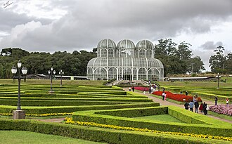
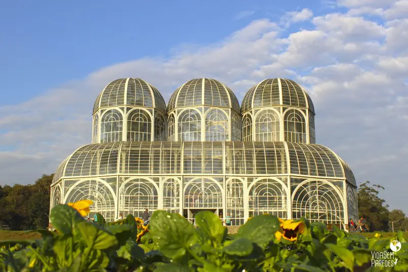
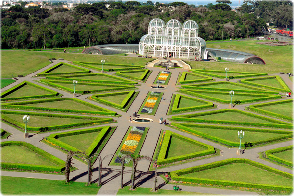
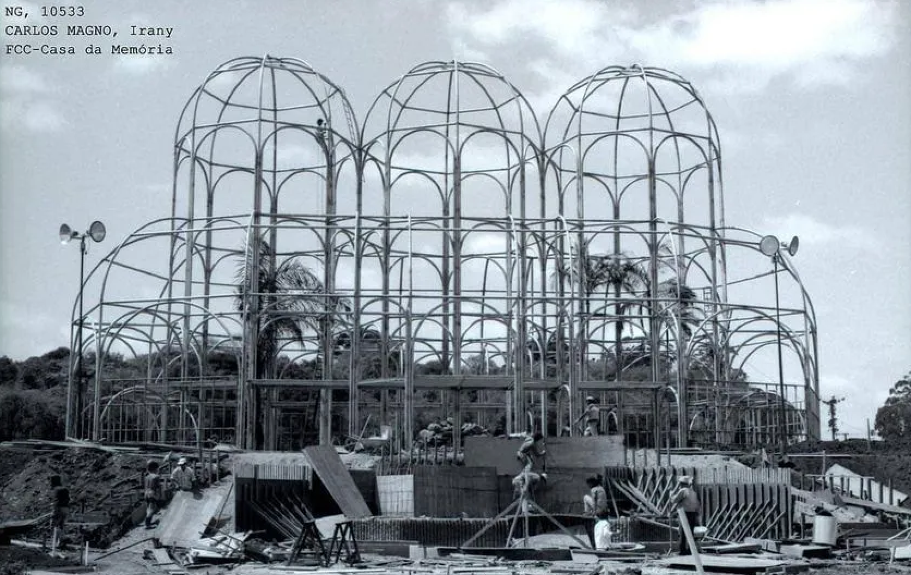
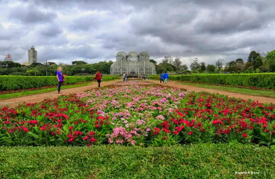

Jardim Botânico de Curitiba e curiosidades
O Jardim Botânico de Curitiba é um dos pontos turísticos mais famosos da capital paranaense e foi inaugurado em 1991. Seu principal destaque é a estufa de vidro, inspirada nos jardins franceses e na arquitetura do Palácio de Cristal de Londres, onde são cultivadas diversas espécies de plantas da Mata Atlântica. O local também possui jardins geométricos, trilhas, lagos e um espaço dedicado à pesquisa e à educação ambiental. Entre as curiosidades, a estufa se tornou um dos maiores símbolos de Curitiba e o jardim recebe milhares de visitantes todos os anos, sendo um dos locais mais fotografados da cidade.

Contexto histórico
O Jardim Botânico de Curitiba foi criado em 5 de outubro de 1991 com o objetivo de preservar espécies vegetais, promover pesquisas científicas e oferecer à população um espaço de lazer e contato com a natureza. Sua construção fez parte de um conjunto de iniciativas voltadas para o planejamento urbano e a preservação ambiental, características pelas quais Curitiba se tornou reconhecida nacional e internacionalmente. Desde sua inauguração, o Jardim Botânico passou a desempenhar um papel importante na conscientização sobre a conservação da biodiversidade.

Importância cultural
O Jardim Botânico de Curitiba possui grande importância cultural e ambiental, pois reúne lazer, educação e preservação da natureza em um mesmo espaço. O local recebe turistas, estudantes e pesquisadores, incentivando o conhecimento sobre a flora brasileira e a importância da conservação do meio ambiente. Além disso, sua beleza arquitetônica e paisagística faz dele um dos principais cartões-postais da cidade, contribuindo para o turismo, a valorização do patrimônio natural e a identidade cultural de Curitiba.

jardim botanico e sua construcao
O nome oficial é uma homenagem à urbanista Francisca Maria Garfunkel Rischbieter, uma das pioneiras no trabalho de planejamento urbano da capital paranaense. Apesar de ter as características de parque, na verdade trata-se de uma estufa botânica. O local em que foi edificado era a antiga favela do Capanema, ocupação irregular próxima ao Estádio Durival de Britto e Silva, a Vila Capanema. O Jardim Botânico de Curitiba foi inspirado nos jardins franceses e possui um estilo neoclássico. O grande destaque do local é a sua estufa de vidro, que foi inspirada no Palácio de Cristal de Londres e tem uma estrutura metálica em forma de cúpula. Nela há diversas espécies de plantas, principalmente aquelas que necessitam de climas mais tropicais.


curiosidades
A etufa
A imponente construção em estilo Art Nouveau possui mais de 270 mil m2. A arquitetura é um charme que diferencia muito o local e o jardim também é muito bonito e com plantas bem exóticas
Sua fundação
Fundado em 1991, o Jardim Botânico ainda impressiona após quase três décadas e atividade. ComprarAtlas Geográficos Sua beleza, história e importância no cenário curitibano despertam a atenção e o interesse de muitos visitantes que buscam entretenimento mas também pesquisadores que se deslocam até o Brasil para estar em contato com as mais diversificadas categorias da flora brasileira. Tendo sido baseado nos estilos de jardins facilmente encontrados em países da Europa, especificamente na França é possível encontrar diversos locais que se assemelham ao Jardim Botânico de Curitiba, pois o estilo similar de plantio e organização das flores segue um padrão reconhecido por séculos como “jardim francês”.